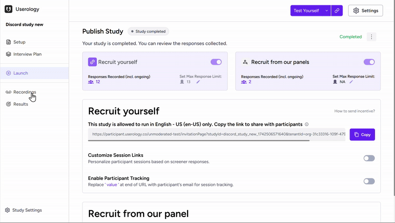
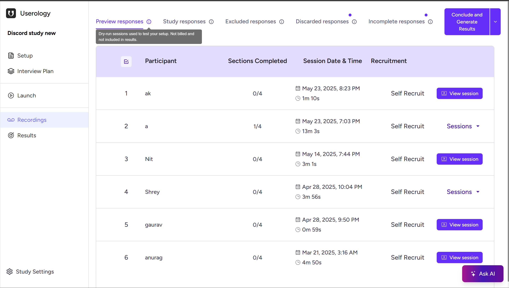
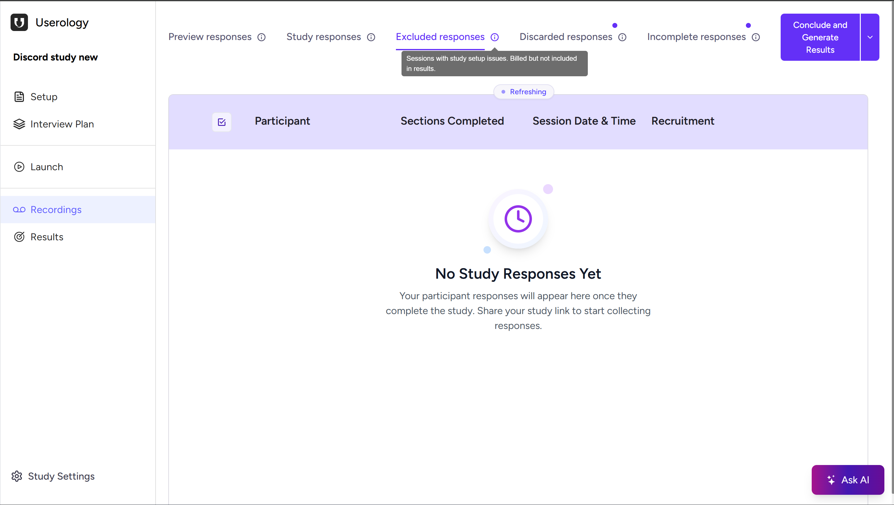
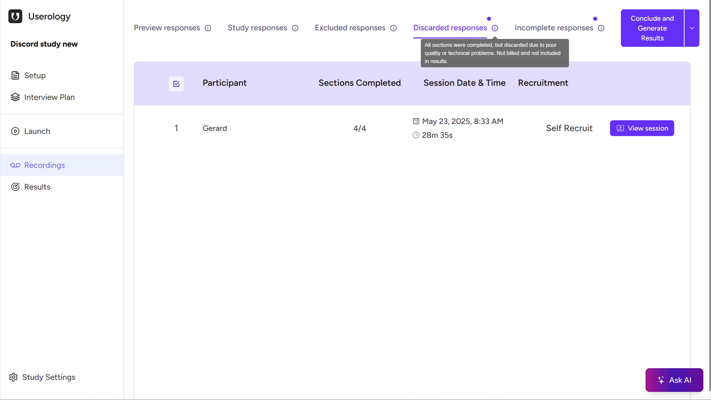
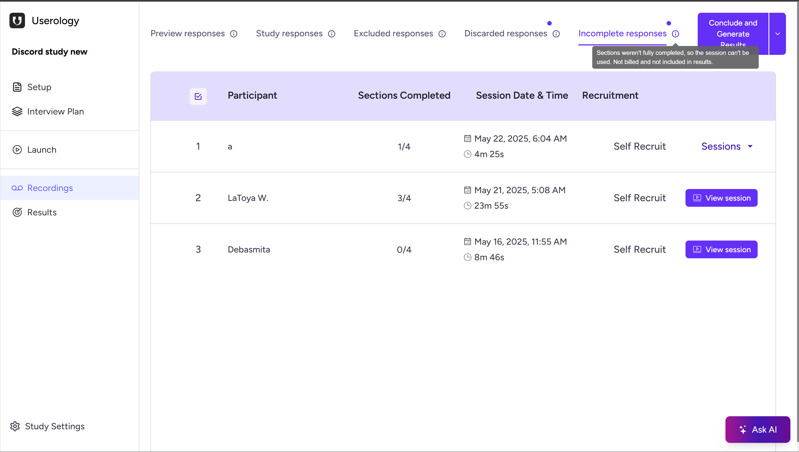
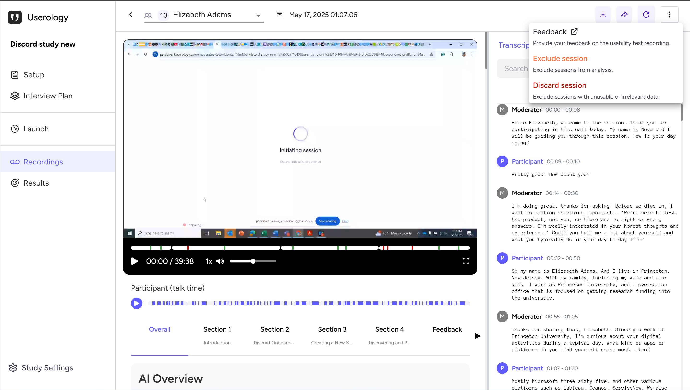
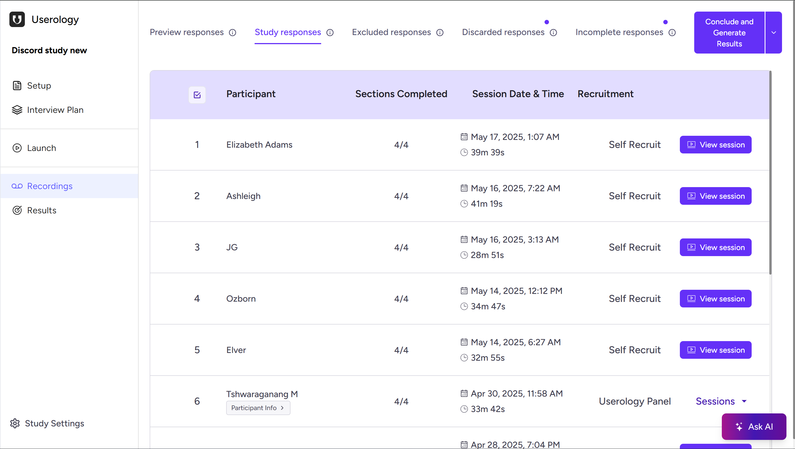

Once your study is published and participants start taking part, all participant sessions are accessible in the Recordings section. You'll receive email notifications when your first response is received and when your response limit is reached.
Accessing Recordings
Open your study and click Recordings from the left navigation pane. Sessions are automatically organized based on their status and quality.

Understanding the Recording Tabs
Sessions are grouped into the following categories:
Preview Responses
Test or dry-run sessions used to validate your study setup before launch. Not billed and not included in results—helpful for sanity-checking flow and instructions.

Study Responses
Valid, fully completed participant sessions. Billed and included in analysis—your results are based on these sessions.

Excluded Responses
Sessions that encountered study setup issues (e.g., technical or configuration problems). Billed but not included in results. These are automatically flagged to protect data quality.

Discarded Responses
Sessions completed but later marked unusable due to poor quality or technical issues. These are not billed and not included in results.
Note: You can manually discard sessions from the session view or overflow menu.

Incomplete Responses
Sessions where participants did not complete all sections. Not billed and not included in results.

Viewing a Session in Detail
Click View session on any participant row to open the full session view. Here you can watch the recording with the transcript alongside, navigate by sections (Introduction, Tasks, Feedback, etc.), and review participant talk time and interaction flow.

This helps you understand not only what the participant completed, but also what they did, said, and where they encountered difficulties.
Managing Sessions Manually
From the session view or overflow menu, you can Exclude a session (remove from analysis if it doesn't meet your criteria) or Discard it (mark as unusable due to noise, irrelevance, or technical problems). This keeps your results clean and ensures only relevant sessions are included.
Downloading, Sharing, and Regenerating Insights
From the session view, you can download recordings, share sessions with teammates or stakeholders, and regenerate session overviews or findings if needed. For more details on creating clips and downloading files, see Creating and Downloading Clips.
Conclude and Generate Results
When your sessions are reviewed and curated, click Conclude and Generate Results in the top-right corner. This concludes the study, generates structured insights, and makes results available in the Results section.

Ask AI: Get Instant Insights from Your Study
The Ask AI button (bottom-right corner of the Recordings page) lets you interact with your study data conversationally. You can ask questions like "What were the most common usability issues?", "Summarize participant feedback for Section 3", or "What patterns emerged across sessions?" to quickly surface insights and validate your hypotheses. For more advanced analysis across multiple studies, explore the AI Synthesis Studio.
If you need further help, please email us at support@userology.co
Was this article helpful?
Thank you for your feedback!